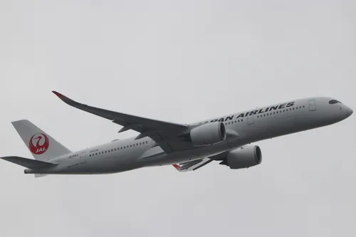
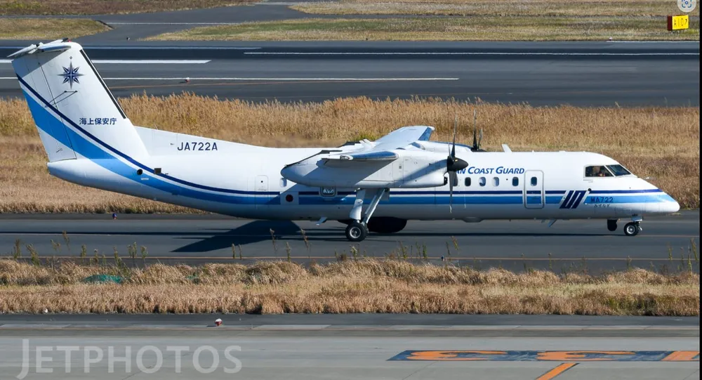

일본 하네다 국제공항, 안전불감증으로 인한 사고

일본항공 JA13XJ (516편) 사고 3시간 43분 전 도쿄 국제공항에서 촬영
해상보안청 JA722A (MA722편) 사고 10일 전인 2023년 12월 22일 도쿄 국제공항에서 촬영
1월 2일 16시 27분: 신치토세-하네다간 정규 국내선 항공편인 일본항공 516편이 신치토세 공항에서 이륙하였다.
17시 43분: 약 1시간 16분가량의 비행을 한 일본항공 516편은 착륙을 위해 하네다공항 국지관제사와 (TOWER) 첫 교신을 하여 계속 접근하라는 지시를 받는다.
17시 45분: 일본항공 516편은 C활주로인 34R 착륙 허가를 받는다. 당시 해상보안청 Q300 항공기가 니가타 공항으로의 비행을 위해 하네다 C활주로로 택싱 중이었다. 이때 Q300 항공기도 하네다공항 국지관제사와 (TOWER) 첫 교신을 하여 C-5 Hold Short Line 대기를 지시받는다.17시 46분 30초경: 해상보안청 Q300 항공기가 C-5 Hold Short Line 대기를 지시받았음에도 불구하고 활주로에 허가없이 들어간다. 이후 충돌 직전까지 약 40초간 활주로 내에서 대기한다. 이때까지 관제사는 해상보안청 항공기가 활주로에 진입한 사실을 인지하지 못한다.
착륙 중이던 일본항공 516편도 마찬가지로 해상보안청 항공기를 보지 못하고 계속 접근한다.17시 47분 28초: 결국 C활주로로 막 착륙한 일본항공 516편과 해상보안청 Q300 항공기가 서로 충돌하였다 . 충돌 직후 해상보안청 Q300은 그 자리에서 폭발하였고, 일본항공 516편은 기수와 노즈기어가 부서지고 왼쪽 날개 엔진 부근에서 화재가 발생한 상태로 약 1km 가량 활주하다가 멈추었다.